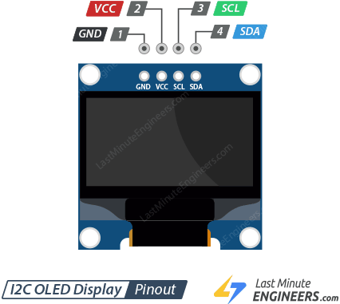
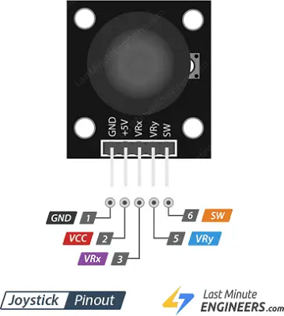

¡Saludos, tecnólogos! Hoy vamos a subir de nivel en dos áreas clave: la precisión de nuestras mediciones y, sobre todo, la creación de una interfaz de usuario (UI) interactiva y de alta calidad. Usaremos el preciso termómetro digital DS18B20, una brillante pantalla OLED SSD1306, y un módulo Joystick para navegar entre múltiples pantallas de datos como si fuera un dispositivo profesional.
🌡️ Protagonista 1: El Termómetro Digital DS18B20
Ya conocen el clásico LM35, pero el DS18B20 juega en otra liga por completo. A primera vista, parece un simple transistor de tres patas, pero en su interior se esconde una pieza de ingeniería impresionante. Pensemos en él no como un simple termómetro analógico, sino como una microcomputadora dedicada exclusivamente a medir la temperatura.

¿Cómo funciona por dentro?
- Sensor de Silicio: El corazón del DS18B20 es un sensor de temperatura de "banda prohibida de silicio". Es un material semiconductor cuyo comportamiento eléctrico cambia de manera muy precisa y predecible con la temperatura. No es aproximado como una fotorresistencia; este cambio físico es tan fiable que se puede convertir directamente en una medición exacta.
- Conversor Analógico a Digital (ADC): La medición del sensor de silicio es, en su origen, una señal analógica. Dentro del propio chip, un conversor de alta resolución (de 9 a 12 bits) la transforma en un número digital. Una resolución de 12 bits le permite detectar cambios de temperatura tan pequeños como de 0.0625°C. ¡Mucho mayor que la obtenida con un LM35!
- El Protocolo "One-Wire" (Línea de Grupo): Esta es la verdadera magia. Imagina un salón de clases donde el profesor (el Arduino) quiere saber la temperatura de cada alumno (los sensores).
- Método tradicional (como el LM35): El profesor necesitaría un cable de conexión individual para cada alumno. Si tiene 10 alumnos, necesita 10 puertos en su consola. Es un desastre de cableado.
- Método One-Wire: El profesor usa un solo cable que pasa de forma secuencial por todos los escritorios. Para hablar con un alumno en específico, primero grita por el bus:
"¡Atención, solo responda el alumno con el número de lista 7A3B-5C8D!". Todos los demás escuchan, pero solo el que tiene esa dirección única responde.
🖥️ Protagonista 2: La Pantalla OLED SSD1306
La pantalla LCD de las prácticas anteriores es sumamente funcional, pero la OLED es simplemente... hermosa. La tecnología OLED (Diodo Orgánico Emisor de Luz) es un salto enorme en comparación con las pantallas de cristal líquido.

- Pantalla LCD Tradicional: Imagina una ventana con una luz blanca siempre encendida detrás (la luz de fondo o backlight). Para crear una imagen, la pantalla tiene miles de pequeñas persianas que se abren o se cierran para dejar pasar o bloquear la luz. Un píxel negro en una LCD no es realmente negro; es solo una persiana cerrada que intenta bloquear la luz trasera que sigue encendida.
- Pantalla OLED: Olvídate de la luz de fondo y de las persianas. Imagina un mosaico gigante hecho con millones de diminutas bombillas de colores independientes. Cada una de estas bombillas (cada píxel) genera su propia luz y puede encenderse o apagarse por completo.
- Sus Súper Poderes:
- Contraste Infinito: Para mostrar el color negro, una pantalla OLED simplemente apaga sus píxeles. No hay luz residual que se filtre, entregando el negro más puro posible.
- Eficiencia Energética: La pantalla solo gasta energía en los píxeles encendidos. Si tu interfaz es mayormente negra con texto blanco, consumirá muy poca corriente.
- Velocidad de Respuesta: Al no requerir cristales mecánicos que giren, los píxeles cambian de estado de inmediato, eliminando el molesto efecto "fantasma" de los textos en movimiento.
🕹️ Protagonista 3: El Módulo Joystick KY-023
El joystick es un componente de entrada maravillosamente ingenioso porque combina tres sensores mecánicos en un solo dispositivo compacto:

- Dos Potenciómetros Perpendiculares: Cuenta con dos potenciómetros idénticos en principio al del Tomo 7. Uno está montado para medir el movimiento en el eje X (izquierda-derecha) y el otro en el eje Y (arriba-abajo). Al mover la palanca, se leen los pines
VRxyVRycon la funciónanalogRead(), obteniendo coordenadas entre 0 y 1023. En nuestro proyecto, ignoraremos el eje X y solo usaremos el eje Y para detectar los movimientos de "arriba" y "abajo" en el menú. - Un Pulsador Táctil Integrado: Debajo de la palanca, hay un pequeño pulsador idéntico al del Tomo 2. Al presionar la palanca hacia adentro verticalmente, cierras el circuito del botón. El pin
SW(Switch) nos permite detectar esta acción.
🔬 Las Fórmulas del Asunto
Para dotar a nuestro instrumento de capacidades profesionales, el microcontrolador leerá la temperatura base en grados Celsius y realizará dinámicamente las conversiones hacia las tres escalas termométricas restantes utilizando las siguientes ecuaciones estándar:
• Kelvin: K = °C + 273.15
• Rankine: R = (°C + 273.15) × 9/5
🔌 El Circuito: Dispositivo de Medición Interactivo
Componentes Necesarios:
- Placa Arduino UNO, Protoboard y cables.
- 1 Sensor de Temperatura Digital
DS18B20. - 1 Resistencia fijada de
4.7kΩ(Pull-Up obligatoria para el bus). - 1 Pantalla
OLED SSD1306de 128x64 píxeles I2C. - 1 Módulo
Joystick KY-023.
📝 Instrucciones de Conexión:
- Pantalla OLED (I2C): Conecta
GNDa GND,VCCa 5V,SDAal pin analógicoA4ySCLal pin analógicoA5. - Sensor DS18B20: Mirando el sensor por su cara plana frontal: pin izquierdo a
GND, pin central (DATA) al Pin Digital 2 y pin derecho (VDD) a5V. - Resistencia de Pull-Up: Conecta de manera obligatoria la resistencia de
4.7kΩuniendo el pin central de DATA (Pin 2) con la línea de5Ven la protoboard. ¡Sin esto, el protocolo One-Wire no responderá! - Módulo Joystick: Conecta
GNDa GND,VCCa 5V y el terminal de señal verticalVRyal Pin AnalógicoA0. Los pinesVRxySWpueden quedarse libres por ahora.
⚡ Diagrama de armado

🧠 El Código: El Sistema Operativo del Termómetro
Para compilar con éxito este sistema operativo, recuerden instalar desde el Gestor de Librerías de Arduino las herramientas: OneWire, DallasTemperature, Adafruit SSD1306 y Adafruit GFX.
/*
* Tomo 10: Termómetro Multiescala con UI Gráfica
* Descripción: Muestra 4 escalas de temperatura en 3 pantallas diferentes
* utilizando una pantalla OLED SSD1306, navegando dinámicamente con un Joystick.
* Por: Profe Campos
* CECyTEM 05 Guacamayas
*/
// --- INCLUSIÓN DE LIBRERÍAS ---
#include <Wire.h> // Comunicación I2C para la pantalla OLED
#include <Adafruit_GFX.h> // Librería gráfica base de Adafruit
#include <Adafruit_SSD1306.h> // Controlador específico para OLED SSD1306
#include <OneWire.h> // Protocolo de comunicación de un solo cable
#include <DallasTemperature.h> // Librería para la gestión del sensor DS18B20
// --- CONFIGURACIÓN DE PANTALLA ---
#define SCREEN_WIDTH 128
#define SCREEN_HEIGHT 64
Adafruit_SSD1306 display(SCREEN_WIDTH, SCREEN_HEIGHT, &Wire, -1);
// --- CONFIGURACIÓN DEL SENSOR ---
#define ONE_WIRE_BUS 2
OneWire oneWire(ONE_WIRE_BUS);
DallasTemperature sensors(&oneWire);
// --- CONFIGURACIÓN DEL JOYSTICK ---
const int pinJoyY = A0;
// --- VARIABLES GLOBALES ---
// Marcador de página del sistema operativo de UI. 0 = Escalas C/R, 1 = Escalas F/K, 2 = Modo Gráfico
int pantallaActual = 0;
// Variables para almacenar las temperaturas calculadas de punto flotante
float tempC = 0.0;
float tempF = 0.0;
float tempK = 0.0;
float tempR = 0.0;
void setup() {
Serial.begin(9600);
sensors.begin();
// Inicialización y verificación de la pantalla OLED por hardware
if(!display.begin(SSD1306_SWITCHCAPVCC, 0x3C)) {
Serial.println(F("Fallo de comunicación con SSD1306"));
for(;;); // Detiene el sistema en un bucle infinito en caso de falla
}
// Mensaje gráfico de bienvenida inicial
display.clearDisplay();
display.setTextSize(1);
display.setTextColor(SSD1306_WHITE);
display.setCursor(20, 20);
display.println("Iniciando...");
display.setCursor(20, 35);
display.println("Manual Tomo 10");
display.display();
delay(1500);
display.clearDisplay();
}
void loop() {
// --- PASO 1: LECTURA COOPERATIVA Y CONVERSIÓN ---
sensors.requestTemperatures();
tempC = sensors.getTempCByIndex(0); // Adquisición del valor base en Celsius
// Fórmulas matemáticas implementadas para las conversiones físicas
tempF = tempC * 9.0 / 5.0 + 32.0;
tempK = tempC + 273.15;
tempR = (tempC + 273.15) * 9.0 / 5.0;
// --- PASO 2: LECTURA DEL JOYSTICK Y CONTROL DE MENÚS ---
int valorJoy = analogRead(pinJoyY);
// Desplazamiento de página hacia abajo
if (valorJoy < 100) {
pantallaActual++;
if (pantallaActual > 2) pantallaActual = 0; // Cierre cíclico de menús
delay(250); // Antirrebote por software para evitar saltos accidentales
}
// Desplazamiento de página hacia arriba
if (valorJoy > 900) {
pantallaActual--;
if (pantallaActual < 0) pantallaActual = 2;
delay(250);
}
// --- PASO 3: DIBUJO ESTRUCTURADO DEL CANVAS ---
display.clearDisplay();
display.setTextColor(SSD1306_WHITE);
// Selector condicional de ejecución gráfica según la página activa
if (pantallaActual == 0) {
dibujarPantallaCR();
} else if (pantallaActual == 1) {
dibujarPantallaFK();
} else if (pantallaActual == 2) {
dibujarPantallaGrafica();
}
display.display(); // Envío físico del búfer gráfico hacia el chip SSD1306
delay(50);
}
// --- FUNCIONES AUXILIARES DE DISEÑO GRÁFICO ---
void dibujarPantallaCR() {
// Ícono reactivo dinámico según el umbral térmico industrial
if (tempC >= 26.0) {
display.fillCircle(110, 15, 8, SSD1306_WHITE); // Representación gráfica de Sol
} else {
display.setTextSize(2);
display.setCursor(105, 10);
display.print("*"); // Representación gráfica de Copo de Nieve
}
// Despliegue formal de Escala Celsius y Rankine
display.setTextSize(2);
display.setCursor(5, 8);
display.print(tempC, 1);
display.print(" C");
display.setCursor(5, 38);
display.print(tempR, 1);
display.print(" R");
}
void dibujarPantallaFK() {
// Silueta de un termómetro clásico de mercurio mediante primitivas geométricas
display.drawRect(108, 10, 10, 35, SSD1306_WHITE);
display.fillCircle(113, 48, 5, SSD1306_WHITE);
// Despliegue formal de Escala Fahrenheit y Kelvin
display.setTextSize(2);
display.setCursor(5, 8);
display.print(tempF, 1);
display.print(" F");
display.setCursor(5, 38);
display.print(tempK, 1);
display.print(" K");
}
void dibujarPantallaGrafica() {
// Encabezados tabulares
display.setTextSize(1);
display.setCursor(0, 0);
display.println(" C F K R");
display.drawLine(0, 10, 127, 10, SSD1306_WHITE);
// Invocación paralela de barras proporcionales escaladas en rangos industriales idénticos
dibujarTermometro(10, tempC, -10, 50); // Celsius: Rango -10 a 50
dibujarTermometro(40, tempF, 14, 122); // Fahrenheit: Equivalente térmico
dibujarTermometro(70, tempK, 263, 323); // Kelvin: Equivalente térmico
dibujarTermometro(100, tempR, 473, 581); // Rankine: Equivalente térmico
}
void dibujarTermometro(int x, float valor, float minVal, float maxVal) {
int altoBarra = 46;
// Mapeo lineal matemático de la magnitud flotante a la escala de píxeles vertical
int llenado = map(valor, minVal, maxVal, 0, altoBarra);
llenado = constrain(llenado, 0, altoBarra); // Limitador de seguridad geométrica
// Dibujo del contenedor exterior de la barra
display.drawRect(x, 14, 14, altoBarra + 2, SSD1306_WHITE);
// Relleno inverso de píxeles para forzar el crecimiento vertical ascendente
display.fillRect(x + 1, 15 + (altoBarra - llenado), 12, llenado, SSD1306_WHITE);
}
🚀 ¡Inténtalo Tú Mismo! (Retos)
- Pantalla de Bienvenida Animada: 🎬 Dale a tu termómetro una personalidad única. Antes de entrar al bucle operativo del instrumento, programa dentro de la función
setup()una animación ágil de bienvenida. Puedes hacer que el nombre del plantel"CECyTEM 05"se desplace desde los bordes laterales, o dibujar un logo geométrico que crezca desde el centro usando las funciones gráficas de la librería Adafruit GFX. - Registrador de Historial Térmico (Máximos y Mínimos): 📈 Convierte tu dispositivo en un verdadero registrador de instrumentación profesional. Diseña una cuarta pantalla (
pantallaActual == 3). Esta nueva interfaz deberá rastrear y mostrar permanentemente las temperaturas máxima y mínima registradas en grados Celsius desde el arranque del equipo. Conecta el pinSWdel joystick a un pin digital libre del Arduino con resistencia interna de pull-up; cuando el alumno presione el botón, el historial deberá reiniciarse, tomando la lectura actual como nuevo punto de partida. - Alarma Visual de Histograma Reactivo: 🔔 Haz que tu interfaz gráfica sea reactiva a las condiciones del entorno. En la tercera pantalla de termómetros gráficos, programa una alerta visual discreta. Si la temperatura en grados Celsius cruza el umbral de sobrecalentamiento (ej. mayor a 30°C), haz que el rectángulo exterior (
drawRect) del indicador de Celsius comience a parpadear encendiéndose y apagándose consecutivamente en cada ciclo. Si baja de una temperatura crítica de frío (ej. menor a 10°C), aplica una animación de parpadeo con una velocidad diferente. Esto enseña a diseñar sistemas HMI reactivos sin saturar la pantalla con texto.